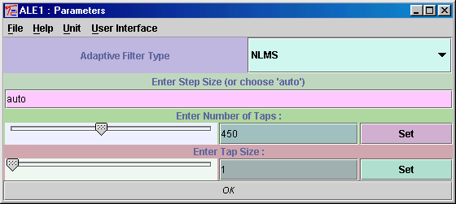
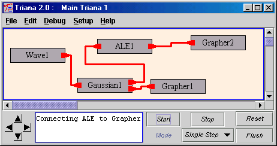
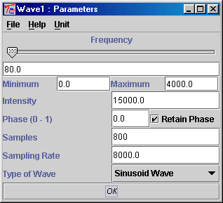
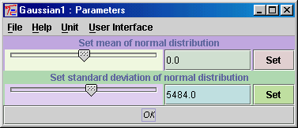
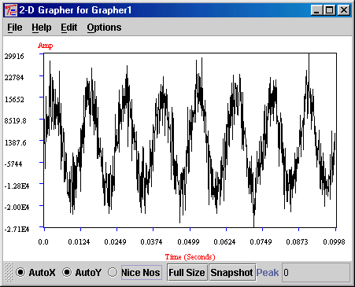
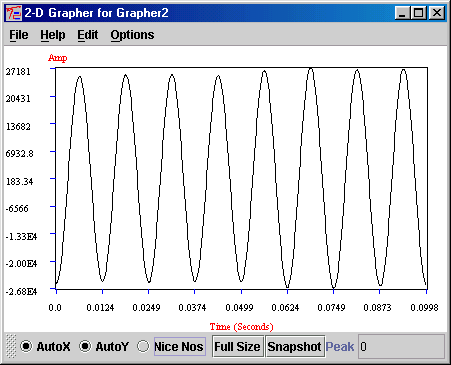
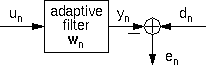
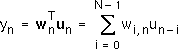
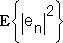

Input Types : SampleSet
Output Types : SampleSet
Date : 18 Sep 2000
This unit performs Adaptive Line Enhancement (ALE) otherwise known as adaptive noise cancelling on the input SampleSet. ALE extracts narrow-band signals out of broad-band noise and therefore is useful for processing or cleaning up continuous streams of noisy data. The function of the unit is a computer model of the following article :
B. Widrow et al : Adaptive Noise Cancelling : Principles and Applications, Proceedings of the IEEE, Vol 63, No. 12, December 1975.
The next section describes how the ALE unit can used practically. Following this there is a section that goes into detail about the operation and theory behind the operation of the unit.
ALE's parameter window (double-click on the unit while holding down the Control key) is used to edit the parameters specific to the ALE unit.

The Adaptive Filter Type is the type of LMS updating to be used. This can be set to Least Mean Squared (LMS) or Normalized Least Mean Squared (NLMS). See the next section for a description of these. The step size is used to control the amount of learning or stepping the algorithm makes at each iteration. Setting this too high will result in instability and can lead to mathematical mistakes (i.e. NaN messages in the Grapher). Setting this too low may mean that the algorithm does not learn at all or that the amplitude of the signal is drastically reduced. See the next section for guidelines of how to set this or choose auto for the ALE unit to automatically set this dynamically for you.
The number of tapsis the number of weights you use for the adaption. Again this value can be worked out empirically for your data set. Setting this too low can make the ALE act like a low-pass filter and setting it too high can add a reverb effect to your signal. Actually setting this value to about 1000 produces a wonderful Concert Room Reverb effect I've noticed!!
The last parameter, the Tap Size, is used to govern at what interval the algorithm is applied to the samples. This is normally set to 1 (i.e. apply algorithm to every sample) unless you want to use ALE to produce some other kind of effect.
The following example shows how ALE (set up with the above parameters) is used to clean up a waveform contaminated with Gaussian noise. This is the algorithm:

The waveform is set so that the wave plus the noise lies within the 16-bit sampling range (i.e. -32768 to -32767) which is the same range as we use for HI-FI recordings or for speech processing. I choose a frequency of 80 Hz i.e.

A high level of Gaussian nose was added:

This produced a wave form which looked like this :

As you can see the waveform is extremely distorted. However, after the ALE is applied to the signal the wave looks like this:

An almost perfect 80 HZ sine wave is extracted! This powerful algorithm can be used for many applications including speech processing, chirp detection, frequency tracking and really anywhere where it is desirable to extract a signal from a noisy background. Musicians, try cleaning up a distorted guitar using ALE!
ALE iteratively calculates the optimum filter coefficient vector wn at the discrete time n, in such a way that a cost function - usually a function of the the filter error en (i.e., the difference of the filter-output yn and the desired output dn) - gets minimised i.e.

The LMS algorithm attempts to minimise the mean squared error:

It is basically a stochastic gradient algorithm. The filter coefficients travel along the first derivative of the mean squared error with respect to the weight vector at time n down to the minimum. This leads to the LMS update
where a is the step-size (or learning rate). This step size is one of the crucial parameters of ALE. It has to be smaller than 2/|un|2 otherwise instability may result. However, setting it near this limit can often produce unusual results. ALE's auto setting below attempts to dynamically change this value as ALE is processing the input samples according to the sums of the squares of the current input. To do this is sets the a parameter to the square of the sums of the squares of the input multiplied by N (the number of taps i.e. samples that the ALE algorithm uses). ALE's normalized LMS (NLMS) algorithm uses the following update :